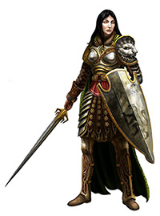
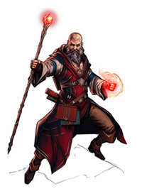

D&D
Character Creation
A guide to playable races and classes
Introduction
As a player in D&D, your first choices are about defining who you are. The story takes place in a high fantasy realm, full of magical and mythological creatures. You need to decide how your character fits into this realm.
Below is a list of some possible playable classes and races. You should pick a class and a race. Any class can be matched with any race.
The incredible thing about D&D is that the only bounds is your own creativity. Therefore, if you can think of a possible race or class that you'd want to play that isn't on the list, just let me know and we'll make it happen.
Background
Perhaps the most important part of D&D is your character's background and personality. While choosing a race and class, consider the story of your character. No matter the story, somehow your character has decided to become an adventurer (someone who travels throughout the realm with a small team to learn long forgotten secrets, defeat powerful foes, and save kingdoms from ruin). For your character, make sure you can answer each of these questions
- What is your character's backstory? Why did they decide to become an adventurer and what previous qualifications (if any) permits them to be an adventurer?
- What is your character's greatest achievement or trait? Does your character give openly to the poor, or perhaps he has deeply studied the golbinoid culture and language? Pick a couple of such traits or experiences. They should help lead an interesting story-arc for your character.
- What is the greatest flaws of your character? Is she loud and speaks her mind too soon? Is she missing an eye or entirely blind? Pick a couple of such flaws. They should help lead an interesting story-arc for your character.
- Does your character have any bonds to a particular group of people or perhaps a prejudice? There should be some people that your character has an unfair biased towards.
- What is your characters secret? Every character should have a secret that they dare not share, not even with their companions. Does your character carry a dark and powerful talisman, or did they accidently kill a team member's brother and that member doesn't yet know? Only share your secret with the Dungeon Master unless someone else is in on your secret!
- What interesting item or mark does your character have? This could be a purple cloak your mother wrapped you in before disapearing forever, or a great gash across your shoulder from a long ago battle. Instead of something that is magicfully powerful, consider an item or mark that identifies your character.
Races
Human
Humans are the most well-rounded race. They do not exceed at any one thing, but have no dominant weaknesses either.
- Age: mature in teens, live for about 70 years
- Size: 5 to 6 feet, 110 to 200 lbs
- Features: natural hair, natural skin tones
Elf
Elves are either sneaky scoutlike wood elves or knowledgable spellcaster high elves. Elves are proud creatures of the forest. They are quiet and shy around those not of their race. An elf can see well in the dark and doesn't require sleep.
- Age: mature around 70, live for about 750 years
- Size: 4 1/2 to 5 1/2 feet, 70 to 140 lbs
- Features: pastel colored hair and skin tones
Drow
Drow are elves of the underdark. They hid underground and in shadows. They are friends to undeadly creatures and spiders. Malicious fighters, they are feared among all above ground. It is very rare to ever meet a drow with good intentions.
- Age: mature around 70, live for about 700 years
- Size: 4 1/2 to 5 1/2 feet, 70 to 140 lbs
- Features: white hair and dark purple skin tones
Halfling
Halflings, otherwise known as hobbits, are playful and energetic. They are small, and use that trait to sneak around unnoticed by taller folk. They like a good drink, a good laugh, and a good group of friends. They are naturally lucky.
- Age: mature around 20, live for about 150 years
- Size: 2 1/2 to 3 1/2 feet, 30 to 50 lbs
- Features: natural hair, natural skin tones
Gnome
Gnomes may look like abnormally large headed halflings, but they have very few things in common with their cousin race. Gnomes are highly intelligent inventors and innovators. They choose tact over skill. Gnomes are also fiercely loyal, even if the bond is not mutual. They are often used as slaves and are generally viewed as a lower class race.
- Age: mature around 20, live for about 450 years
- Size: 3 to 4 feet, 40 to 60 lbs
- Features: pastel colored hair and skin tones
Dwarf
Dwarves are masters of steel and stubborness. They live deep in mountains and value the ores and gems therein. They have heavy footsteps, because they usually bear a heavy load of armor, weapons, and loot.
- Age: mature around 20, live for about 350 years
- Size: 4 to 5 feet, 150 to 300 lbs
- Features: natural hair, natural skin tones

Tiefling
Tielfings have an infernal bloodline: a long lost heritige with demons. Although most tielfings have very little demon blood in them, their appearance frightens most civilized realms. From their forehead protrudes bull-like horns that curl behind the head. They have long whipped tails and tough hide skin.
- Age: mature around 20, live for about 100 years
- Size: 5 to 6 feet, 100 to 200 lbs
- Features: red, orange, or redish brown skin with black, brown, red, orange, or no hair
Half-orc
Half-orcs inherit an ill-temperment from their orcish heritage. Most societies avoid orc kind, and half-orcs only encourage this prejudice with their anger and thoughtlessness. They excell at melee combat, and are fairly intimidating.
- Age: mature around 14, live for about 75 years
- Size: 5 1/2 to 6 1/2 feet, 140 to 240 lbs
- Features: green, brown, yellow, or redish skin with black, brown, white, or no hair
Dragonborn
Dragonborn are humanoids born of dragons. They usually appear more dragon than human, and are proud of their heritige. Most fear a dragonborn, even though they aren't inherently evil. They have reistences to the element that is associated with their ancestor dragon.
- Age: mature around 15, live for about 80 years
- Size: 6 to 8 feet, 200 to 400 lbs
- Features: any colored skin, no hair, and scales
Classes
The Main Four
Fighter
Out of all the classes, a fighter does the best on a battlefield. Specializing in versatile weapon combat, she can fire a crossbow from afar, dash swifty into a group of monsters, slash one with a sword, and deflect the blows of the others with her shield. Her versatility makes her a viable adventurer even out of combat, but when the wardrums sound she is ready to answer.
Rogue
The rogue is a character of shadows. He is a master of sneaking, pickpocketing, and lockpicking. In combat, he will wait in the dark until he can sneak up on his enemy. Drawing his poison-tipped dagger, he strikes from the shadows performing a powerful and sometimes deadly strike. He struggles with direct confrontation, but reveals his true strengths when completely hidden.

Wizard
A wizard is a scholar of spells. He studies ancient tomes and uses magical staves to conjure spells and tricks. A wizard can control a battlefield by summoning a wall of fire or tangling a group of raiders in enchanted vines. Out of combat, the wizard uses his knowledge of history, magic, creatures, and locations to provide wisdom for his team.
Cleric
A worshipper of demigods and gods, the Cleric calls upon magic that blesses her allies and curses her foes. Unlike other spellcasters, the Cleric draws power from her diety. She is a healer and protector to her friends. She is a destroyer of evil. Able to discern the good and evil in all, she can easily tell friend from foe.
Other Classes
Barbarian
Pure Chaos. The barbarian builds up rage and storms into battle without fear of pain or death. He wears no armor, and wields ridiculously large weapons. He is a chaotic warrior that deals devasting damage to all within range. The barbarian strikes first and asks no questions.
Bard
Adventurering wears on heroes souls. As her team sorrowfully sits around the campfire, the bard plays her lute and the magic therein gives confidence to her companions. The bard uses a magical instrument to cast auras and spells. Her focus isn't in combat, but in social situations. She can soften the heart of her kidnappers, gain wonderous secrets at the pub, and learn of ancient lore from the veteran warrior.
Druid
The druid is one with nature. With her animal companion at her side, she uses the forces of nature to protect her forest and allies. She is well trained to survive is harsh environments, and is an excellent tracker. She uses her animal companion, spells, and items to gain a tactical advantage in combat.
Monk
The monk follows a path of discipline. Bearing no armor and wielding no weapons, he is attuned to hand combat. He uses his agility and strength to overcome his enemies. The ki energy within him allows him to exceed expected physcial capabilities.
Paladin
Much like the cleric, the paladin is a follower of a diety. Aligned to a things lawful and all things good, the paladin is fiercely loyal. She is heavily armored and can call on the aid of her god to bless her allies and harm her foes. She does not lie or cheat, and is therefore trusted by all. If a paladin ever fails to live up to the expectations of her diety, her powers are taken from her.
Ranger
The ranger is a hunter. He marks his prey and strikes true with his bow. His animal companion aids in his attack against his marked foe. The ranger is an excellent fighter in one-on-one combat, but struggles when he is surrounded. So he uses is stealth to gain a tactical advantage before firing his arrow.
Sorcerer
A wizard draws magic from tomes and the energy around him. The sorcerer draws raw choatic magic from within his own soul. Sorcerers are magicborn, touched at birth by some magical force or great entity. He uses his own willpower to unleash great storms of spells. Sometimes he cannot contain the power within, and unleashes a torrent of raw magic.
Warlock
The warlock is a dark magic bearer. He has pacted with a demonic being that promises great power. Warlocks suppliment melee combat with magical effects. They are usually aided by a creature companion: a gift from their demonic benefactor.